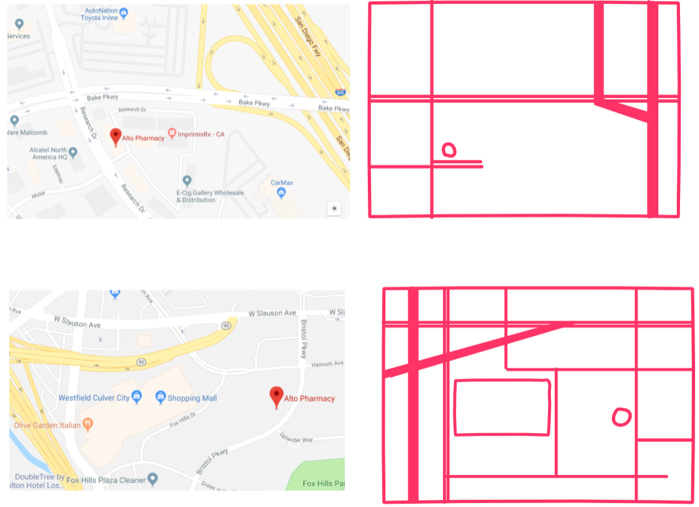
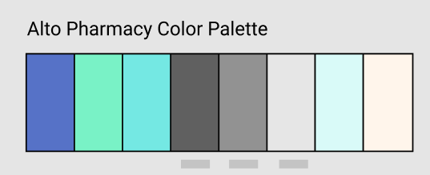

This was a personal project, serving as a basis to familiarize myself with Figma and InVision. I wanted to try my hand at a project which was doable, but unique and posed design challenges. For my project, the color palette, logos, and design style that I followed are all owned by Alto Pharmacy in San Francisco, CA.
My plan was to only use Figma at the start, but I decided to try sketching a freehand concept of my maps using InVision. This produced the following low-fidelity sketches.
Like my other projects, I began this map redesign project by breaking down the street map information and considering the target audience for the design. For example, I considered the patients who would be looking at the maps, what they should expect to see in a helpful map, and how long they would view at the map.
One design challenge that I faced was effectively use of the Alto Pharmacy color palette, shown below. The colors in palette for the logo are reserved for the logo, so I went with the tan and shades of gray for my background and roads labels.
Another interesting challenge was how much detail to include, and how to destinguish highways with larger roads and smaller roads. To me, varying the thickness of the road is the most intuitive distinguishing factor. I went with consistent thickness for each type of road between and within both map designs, for continuity. To address detail, I designed a map that not only preserves major landmarks and large roads, but also reduces the original Google Street Map into a more approachable map with right angles and 45 degree angles only if necessary. I did this to reduce complexity and ensure that the user can glance at the map quickly to understand the location, should they be in a hurry.
The final design of both maps is clearly readable and approachable. I was initially worried by the contrast between the tan background and the grays of the text for road names, but this turned out to be minor.
View the freehand here and Figma prototype here.